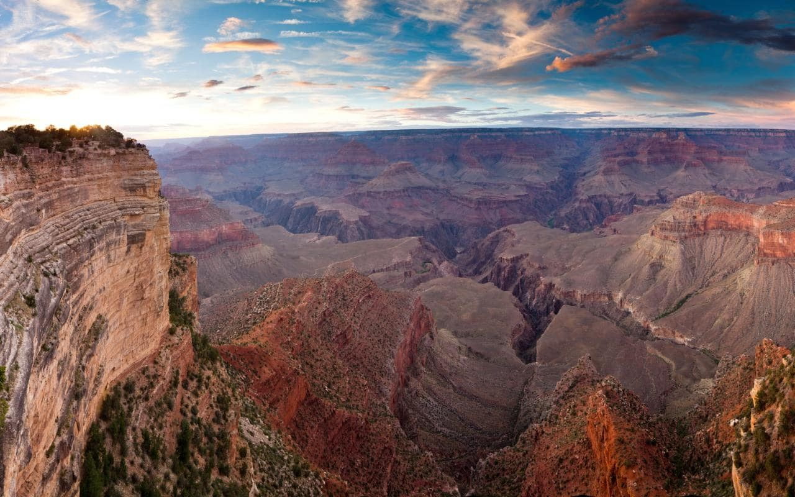
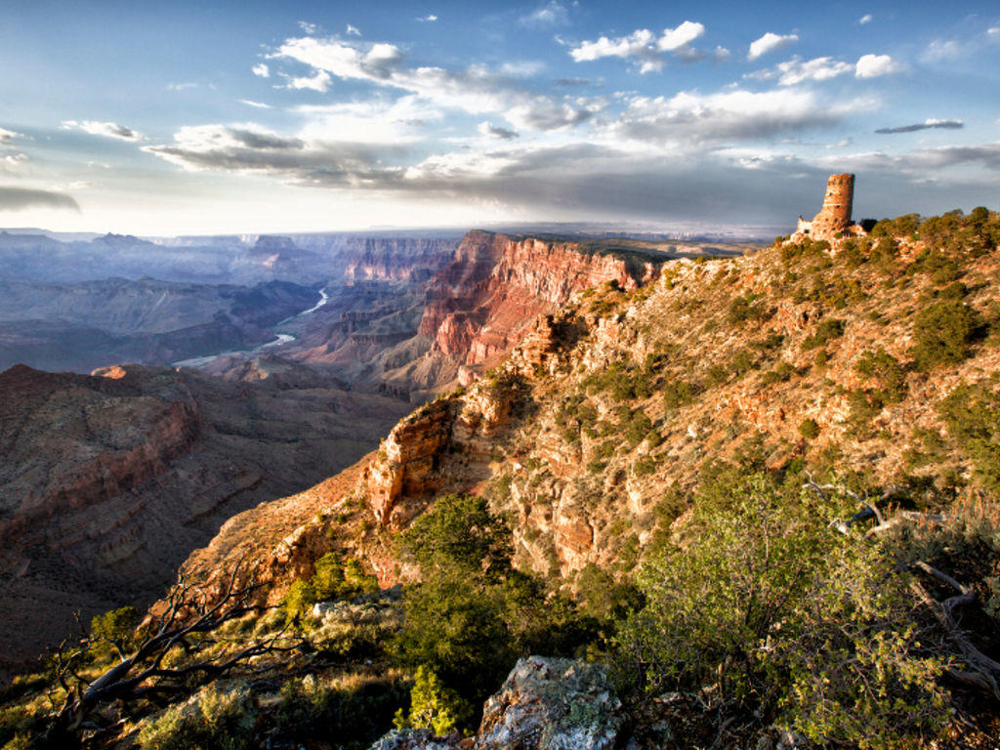
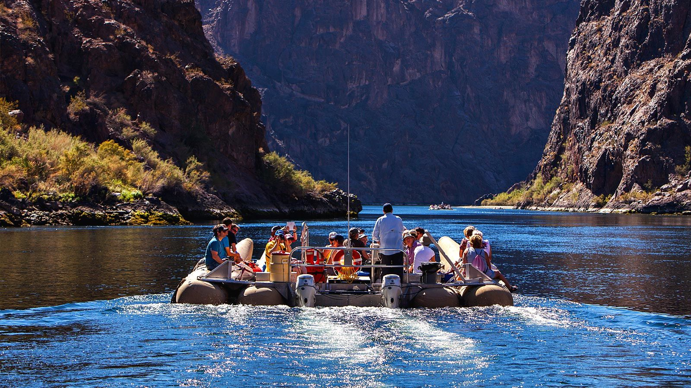
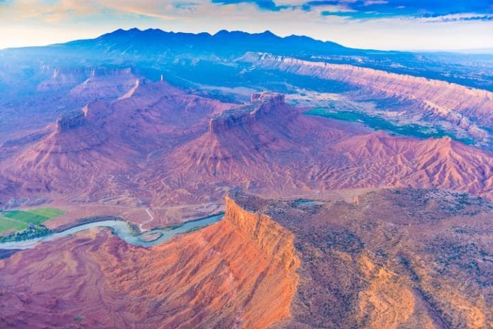
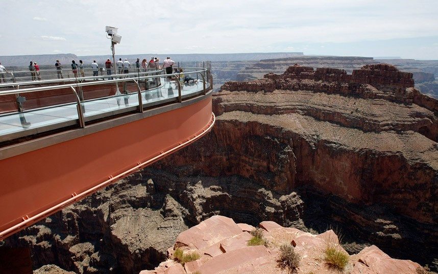
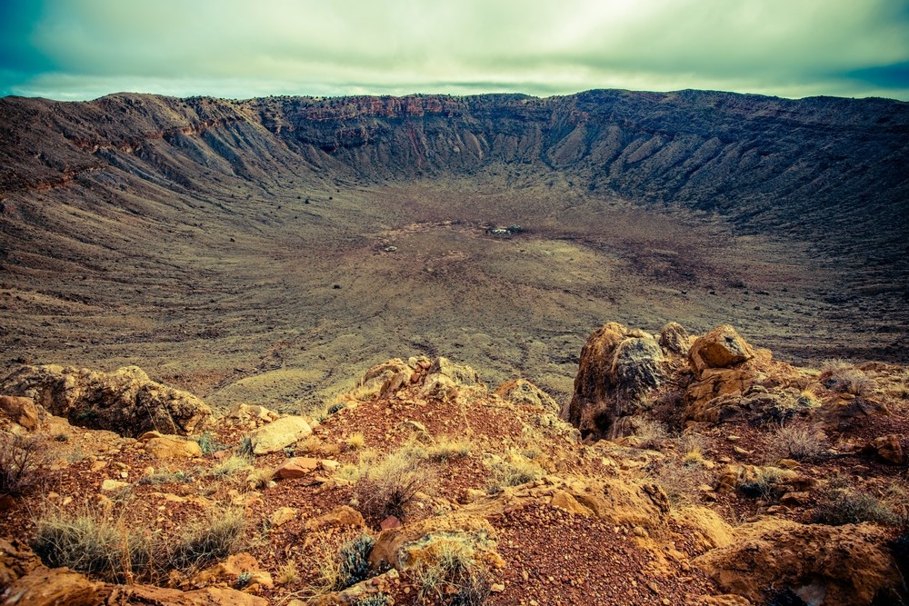

Когда ехать
Гранд-Каньон является очень популярной достопримечательностью. На протяжении километра можно встретить около десятка туристов из разных стран. И самое удивительное, что встретить их можно в Гранд-Каньоне и в январе. Большой Каньон посещают около 5 миллионов человек ежегодно. Большинство конечно же летом.
В среднем, в каньоне, в августе достигает 28C вдоль южного края и 39C в нижней части. Зимой здесь менее людно, воздух более чист, да и не слишком холодно.
Добраться
Прогулки по Большому Каньону осуществляются по направлению восток-запад на 42 километра, а в ширину это направление составляет около 16 километров. Гранд-Каньон является Национальным парком, с территорией в 49 тысяч квадратных километров. Чтобы всё здесь осмотреть понадобятся недели. До South Rim легче добраться из Феникса или Лас-Вегаса, и, следовательно, здесь гораздо более многолюдно, но и более удобнее (открыто круглый год, North Rim недоступен с середины октября до середины мая).
Летом здесь желательно резервировать проживание, впрочем, и зимой тоже. Потому как стоит остаться внутри каньона хотя бы на пару дней (все жильё в парке находится по периметру парка или же внутри каньона). Если вы думаете, что это стоит того, чтобы сэкономить несколько долларов, оставаясь вне каньона, за пределами парка… Вы этого себе не простите, когда увидите сам Большой Каньон.
Проживание в пределах национального парка не самое дешёвое для индивидуалов, но дешевле, если вы в туристической группе. Вариантов проживания предостаточно в разных частях национального парка. Все они по цене варьируются от 130 до 200 долларов за ночь.
Ко дну
Если вы захотите спуститься к реке Колорадо, есть два пути вниз, на дно каньона: пешком или на муле. Обратите внимание, что поездки на мулах бронируют за 12-14 месяцев вперёд. Поездка с ночёвкой обойдётся в 500 долларов США, а двухдневная поездка и все 700 долларов США. Случается, что кто-то отказывается от поездки и такие моменты нужно ловить, звоните 928 638 2631, хотя, вряд ли это настолько актуально для туристов из России. Более короткие поездки доступны с обоих краёв каньона, в том числе новые трёхчасовые маршруты вдоль новой East Rim Trail, что обойдётся примерно в 120 долларов США на человека.
Совершить поход на несколько дней по Гранд Каньону мечтают многие. От южного края это долгий путь вниз и еще более длинный путь обратно вверх. И, как минимум одна ночь в Phantom Ranch, единственный вариант проживания в нижней части каньона, предпочтительно, две ночи. Номер на двоих стоит около 150 долларов США. Бюджетный вариантом является хостел с двухъярусными кроватями, около 50 долларов.
Внизу
Боитесь высоты? Аллергия на мулов? Тогда можно отправиться в путешествие по Гранд Каньону на… рафте, по реке Колорадо.
Большинство туристических пакетов предлагают маршрут в 450 километров сроком на 15-18 дней. Доступны всевозможные комбинации путешествия. Кто-то предлагает 7-8 дней: пешие походы и сплавы и даже полёт на вертолёте по каньону. Цены на подобные приключения начинаются от 4000 долларов на человека.
За гранью
Не пропустите Desert View Watchtower на восточном краю каньона, построенный по проекту архитектора Мэри Колтер в 1932 году (Колтер также делала Bright Angel Lodge, в Phantom Ranch, и многие другие парковые сооружения). На основе работ Колтер была восстановлена смотровая площадка Pueblo, местным художникам поручили украсить интерьер фресками и копиями древних петроглифов, обнаруженных в и вокруг парка.
Забудьте про страх высоты, если вы выберете Grand Canyon Skywalk в западной части каньона. Skywalk является 20-ти метровым подковообразным стеклянным мостом, который крепится кронштейнами к каньону, и под ним пропасть в 1200 метров, до реки Колорадо. Он был построен и обслуживается племенем Hualapai. Вы заплатите около 70 долларов США за взрослого, чтобы попасть на эту подкову и почувствовать себя зависшими в воздухе над Гранд-Каньоном.
Что-то покупать в Hopi House вовсе необязательно, но, в дань уважения к местным индейским художникам можно и прикупить себе сувениры. Даже если вы не покупаете ювелирные изделия, ковры навахо, или индейскую керамику, это отличное место, чтобы узнать о местных традициях. Например, Santa Clara сохранила неразрывные традиции гончарного дела ещё с доколумбовых времен, в то время как традиции Jemez почти вымерли и лишь недавно были восстановлены, сделав керамику Jemez довольно популярными сувенирами.
Близлежащие достопримечательности
Если вы взяли в прокат автомобиль, то не пропустите Painted Desert, который находится на востоке Гранд-Каньона. Национальный Парк Окаменевшего леса, в основном расположен на территории Навахо. Яркие узоры и цвета этого парка совершенно непохожи на драматизм Большого Каньона. Но, здесь также красиво.
Пустыня насыщена железом и марганцем, и потому окрашена в красные, оранжевые, розовые и фиолетовые цвета. Если углубиться внутрь парка, то можно увидеть сам окаменелый лес, и даже остановиться в недавно отреставрированном глинобитном Painted Desert Inn в пределах парка.
Если вы хотите увидеть, что произошло 50 000 лет тому назад, когда большой метеорит пробил брешь в атмосфере Земли, посетите Метеоритный кратер, примерно в двух часах к юго-востоку от каньона.